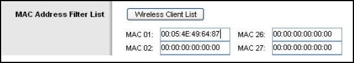
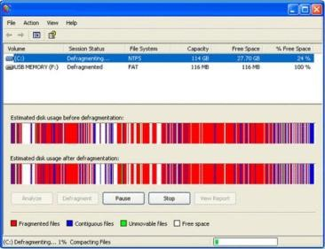
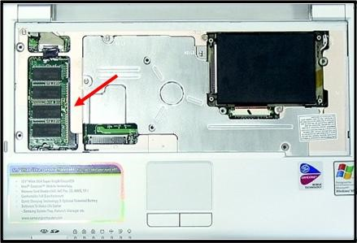
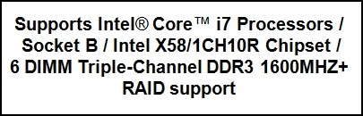

Chapter Practice final 11 – 16 – IT Essentials
01. Which three ports should be left open to avoid filtering e-mail traffic? (Choose three.)
- 23;
- 25;
- 107;
- 110;
- 143;
- 212.
02. Which interface can transfer data at a maximum speed of 480 Mbps?
- Parallel;
- Serial;
- SCSI;
- USB 2.0;
- IEE 1394.
03.  Refer to the exhibit. Based on the information shown, which statement is true?
- The only PC allowed on the wireless network is the one with the MAC address 00:05:4E:49:64:87.
- The only PC allowed to make changes on the wireless router is the one with the MAC address 00:05:4E:49:64:87;
- The only PC that has its data encrypted when sending traffic over the wireless network is the one with the MAC address 00:05:4E:49:64:87;
- The only PC that has to authenticate with a userid and password to gain access to the wireless network is the one with the MAC address 00:05:4E:49:64:87.
04. When upgrading a CPU what must be applied between the new CPU and the heat sink/fan?
- lubricating grease;
- thermal compound;
- adhesive gel;
- penetrating oil.
05. Engineers are designing a security scheme to allow only authorized persons to access the facilities of a national bank. Which security control measure provides the most secure solution for employee identification?
- card keys;
- security guards;
- security key fobs;
- biometric devices.
06. Which Startup type must be selected for a service that should run each time the computer is booted?
- automatic;
- boot;
- manual;
- start;
- startup.
07. A company has a preventive maintenance policy that requires every computer have a new restore point created every six months. How can a technician create the restore point?
- From the CLI enter the command restore /cn;
- Go to Start > Control Panel > Accessories > System Tools > System Restore > Create a restore point;
- Go to Start > All Programs > Accessories > System Tools > System Restore > Create a restore point;
- Right-click My Computer and then go to Properties > Restore > Create Restore Point.
08. For a default installation of Windows XP Professional, which two settings are customizable? (Choose two.)
- regional settings;
- shared folders and mapped drives;
- display settings;
- network settings;
- disk management.
09. The network manager decides to implement a simple security solution to the company WLANs. Which wireless security technique should the manager take to hide the WLAN id from any access point?
- Configure WEP only on the access point;
- Install WAP on the wireless clients;
- Configure MAC address filtering on the access point;
- Disable the broadcast of the SSID on the access point;
- Decrease the antenna spectrum on each wireless client.
10.  Refer to the exhibit. Which utility has the IT department started on each computer?
- Chkdsk;
- Computer Management;
- Defragment;
- Scandisk.
11. A technician has been asked to develop a physical topology for a network that provides a high level of redundancy. Which physical topology requires that every node is attached to every other node on the network?
- bus;
- hierarchical;
- mesh;
- ring;
- star.
12. What are two problems that are caused by setting an incorrect boot order in the system BIOS? (Choose two.)
- The computer locks up without any error messages;
- The computer displays a “Missing NTLDR” error after POST;
- The computer displays an “Invalid Boot Disk” error after POST;
- The computer continually restarts without displaying the desktop;
- The computer displays an “Inaccessible Boot Device” error after POST.
13. Which action should be taken first if a card key is lost or stolen?
- Disable the card key system until the key can be recovered;
- Disable all card keys. Issue new card keys to employees who show picture identification;
- Issue the owner a new card key after a picture identification is shown;
- Disable the lost card key.
14. Which recommendation should be observed when replacing existing memory?
- The new memory should operate at the same speed as the hard drive;
- The new memory should exceed the capacity of the hard drive;
- The new memory should be as fast or faster as the cache found in the processor;
- The new memory should be as fast or faster than existing memory.
15. Several messages sent to the network administrator are reporting that access to a secure server using HTTPS is failing. After checking recent updates to the company firewall, the administrator learns that the firewall is blocking HTTPS. Which port should be opened to solve the problem?
- 22;
- 53;
- 80;
- 143;
- 443.
16. What are two characteristics of the IEEE 1284 parallel interface standard? (Choose two.)
- These cables usually have 9 pins or 25 pins on both ends;
- The maximum cable length is 50 ft (15 m);
- All ports that are used by this standard are also known as D-shell ports;
- The two available operative modes are EPP and ECP;
- Bi-directional communication is allowed.
17. A network administrator has been informed about a problem with the network printer. What is the most reliable way to prevent print jobs from being added to the queue while the printer is being repaired?
- Send an e-mail to all users telling them to stop sending any print jobs to the printer;
- Send a network message to all users telling them to stop sending any print jobs to the printer;
- Unplug the printer from the print server;
- Stop the print spooler.
18. A technician has installed a third party utility that is used to manage a Windows XP computer. However, the utility is unable to startup automatically whenever the computer is started. What can the technician do to resolve this problem?
- Uninstall the program and then use Add New Programs in the Add or Remove Programs utility to install the application;
- Use the Add or Remove Programs utility to set program access and defaults;
- Change the startup type for the utility to Automatic in Services;
- Set the application registry key value to one.
19. A call center technician receives a call from a customer who wishes to add more memory to a laptop to increase graphics performance. Which type of memory should be installed?
- cache;
- CMOS;
- NVRAM;
- RAM.
20. A technician has been asked to connect a new scanner to a computer. Which interface provides the fastest transfer of data?
- USB 2.0;
- SCSI (Ultra-320);
- Parallel (IEEE 1284);
- Serial (RS-232).
21. A technician is trying to explain USB 1.1 and USB 2.0 to a user in terms of speed. The user is having problems comparing the two standards based on the values expressed in Mbps. Which explanation can the technician use that will best describe the relationship?
- USB 2.0 is twice as fast as USB 1.1;
- USB 2.0 is twenty times as fast as USB 1.1;
- USB 2.0 is forty times as fast as USB 1.1;
- USB 2.0 is one hundred times as fast as USB 1.1.
22. Refer to the exhibit. The IT department requested a new set of memory chips to upgrade the old laptops. A picture of the memory chip required is attached to the purchase order so the correct item can be bought. Which type of memory module is the IT department expecting to receive?
- DIMM;
- DDR2;
- DRAM;
- LT-RAM;
- SODIMM;
- SORAM.
23. A computer has been relocated and all the cables reconnected. When the computer is powered on, the correct POST audio signals are heard and the hard drive LED shows disk activity. However, the monitor fails to display anything. What are two possible causes of this problem? (Choose two.)
- The monitor Power Scheme settings are incorrect;
- Relocation requires that the monitor resolution be re-adjusted;
- The monitor cable connector is loose or disconnected because the retaining screws are missing;
- The monitor is too far from the computer and the stretched monitor cable has unseated the serial interface card;
- The monitor is connected to the integrated video adapter on the motherboard instead of the expansion slot adapter.
24. The corporate security policy states that all remote connections use only secure tunnels for transport of data. Which encryption technique secures data traveling across the public Internet as if it were traveling across the corporate LAN?
- MD5;
- VPN;
- WEP;
- WPA.
25. Which feature is characteristic of the ntbackup command?
- It can be executed from a batch file;
- It can be used to restore files;
- It is used to create a copy of the registry; – folosit
- It is used create restore points.
26. Refer to the exhibit. What type of partition arrangement does this Windows XP computer have on its hard drive?
- 1 primary, 3 extended, 1 logical, 1 free space;
- 1 logical, 3 primary, 1 free space, 1 extended;
- 3 logical, 1 extended, 1 free space, 1 primary;
- 3 free space, 1 logical, 1 primary, 1 extended.
27. What is the highest risk associated with improperly charged or mishandled batteries?
- The components can overheat;
- The laptop will be unable to hold enough charge;
- The battery can explode;
- The lifetime of the battery will be reduced.
28.  Refer to the exhibit and consider the advertisement that is shown. Based on the advertisement, which statement is accurate regarding this motherboard?
- The Intel Core i7 processor supports a 1600-bit address bus;
- The Intel Core i7 processor supports a maximum bus speed of 1600MHz;
- The Intel X58/1CH10R chipset can be upgraded on this motherboard for faster throughput and performance;
- The Intel X58/1CH10R chipset dictates the maximum number of PCIe expansion slots that can be on this motherboard.
29. Which two characteristics describe a software firewall? (Choose two.)
- It typically protects only the computer it is installed on;
- It is free-standing and uses dedicated hardware;
- Initial cost for hardware and software updates can be costly;
- It uses the CPU in the host computer;
- It requires a specialized motherboard.
30. Which safety precaution should an installer take when installing cable in the ceiling of a building?
- Wear thick gloves to minimize damage to the cable;
- Wear a shirt with short sleeves to avoid getting stuck in the cable supports when installing;
- Wear lightweight shoes when installing cable runs inside the ceiling;
- Wear safety glasses in case of encountering toxic materials during the installation.
31. A technician is working on a laptop with a touchpad that fails to work. Which two actions can the technician take to try to repair the problem? (Choose two.)
- Reinstall the operating system;
- Enable the touchpad in the system BIOS;
- Clean the surface of the touchpad;
- Replace the CMOS battery controlling the touchpad;
- Ensure that the operating system has the correct driver for the touchpad.
32. The production manager of a small company is experiencing slow performance in a laptop. What should a technician try first in order to correct the problem?
- Defragment the hard disk;
- Reload the operating system;
- Install additional RAM;
- Upgrade the existing CPU.
33. Which Windows hard drive partition is referred to as the C: drive?
- the first volume partition;
- the first primary partition;
- the first extended partition;
- the first logical partition.
34. A Windows Vista computer does not display the thumbnail views of two windows that are currently minimized in the taskbar when the mouse pointer is placed over the appropriate tile on the taskbar. What is a possible solution to this problem?
- Configure the BIOS to run Microsoft Enhanced Desktop Graphics;
- Start the Vista Aero enhanced display features by launching services.msc;
- Enable the Graphics Options “Tray Icon” in the Taskbar and Menu Properties window;
- Upgrade the RAM and video card to the meet the minimum Microsoft requirements for Aero.
35. Which two hazards are related to fiber optic installations? (Choose two.)

{kind=link}
{kind=link}
{kind=link}
{kind=link}
{kind=link}
could you please send me the final exam 11-16 for IT-essentials, your test is the only one that I use and I was shocked to find your site was down. I have the test tomorrow. Thank you
Yeah, I have finals in this course in 5 days. Hope it is back up to study. The Mid-term had three possible tests totaling over 100 possible questions. It still helped on a bunch of questions!
Do you have any examine answers for network security fourth edition? I am taking final on this in a couple of days. Thank you so much for all the help you have given me from your site. i just passed ccna 2 with great scores and you site is the only one that I use. I study too. Thank you susan
Hi, I personally do not but you can look at: http://www.filecrop.com/cryptography-and-network-security-4th-edition.html